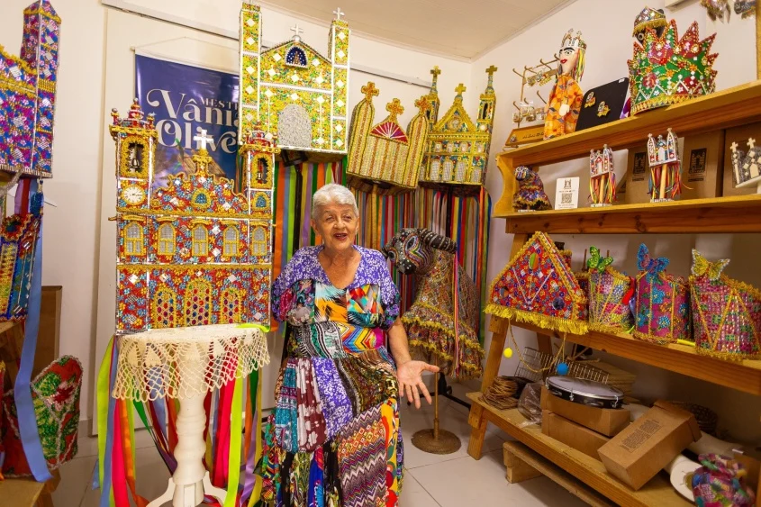
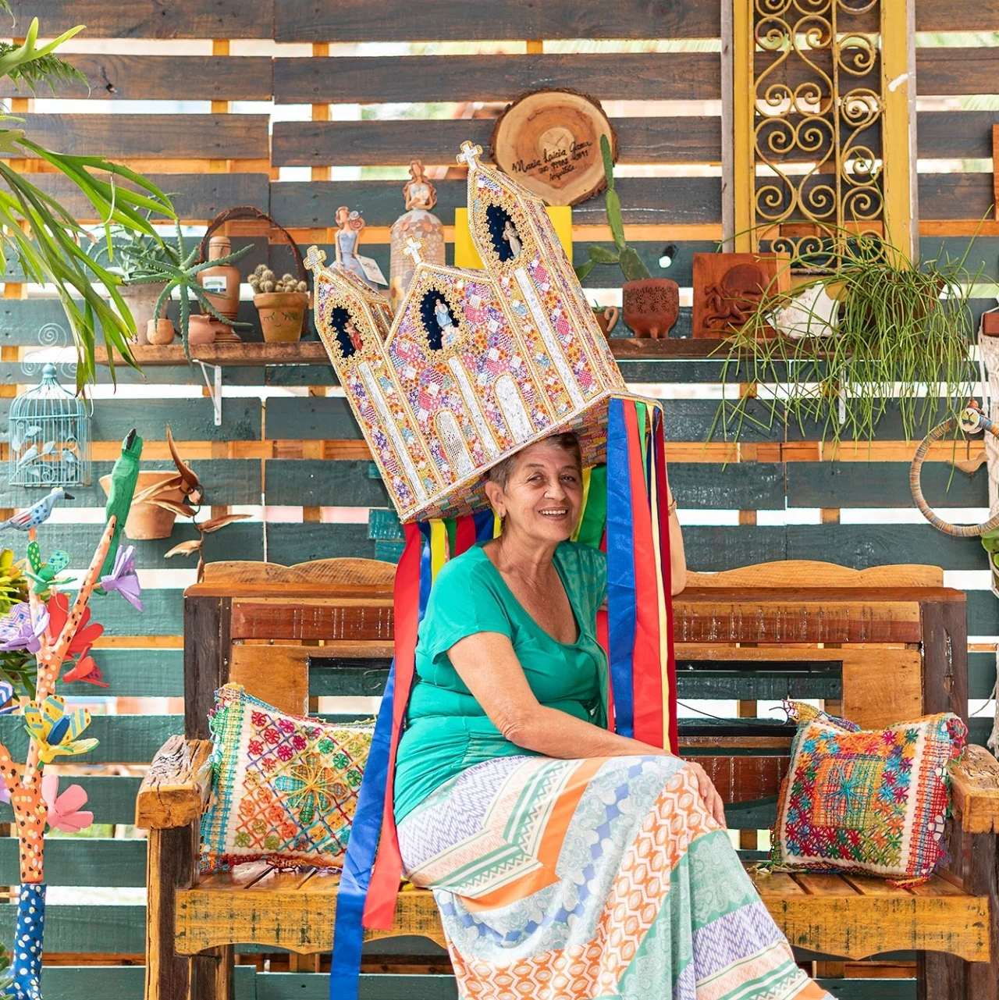
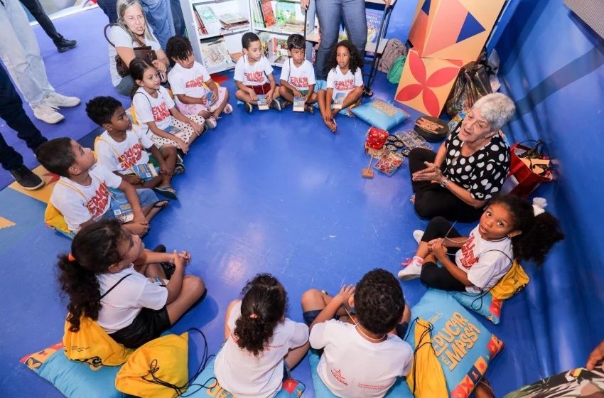
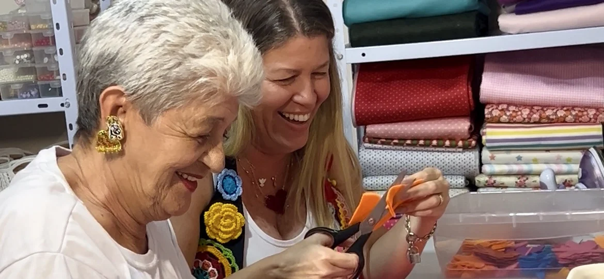

Chapéu de Guerreiro
Com brilho, cores e fitas, os chapéus dão presença aos personagens do Guerreiro Alagoano.
Consultar sobre o chapéuArtesanato popular de Alagoas
Das festas populares de Alagoas para a Casa Ateliê, Vânia dá forma às histórias do Guerreiro e do Bumba Meu Boi.

A trajetória
Nascida e criada em Maceió, Vânia Oliveira começou a fazer artesanato criando as lembranças de aniversário da primeira filha. Autodidata e admiradora dos folguedos, encontrou nas festas populares de Alagoas a inspiração para seu trabalho.
Em 2015, foi reconhecida como Patrimônio Vivo de Alagoas. Ela também compartilha o ofício em aulas e oficinas e atua pela valorização de quem vive do artesanato.
Leia o perfil na Rede ArtesolCriações
Fibras, papietagem e fitas coloridas dão forma a personagens e adereços da cultura popular alagoana.

Com brilho, cores e fitas, os chapéus dão presença aos personagens do Guerreiro Alagoano.
Consultar sobre o chapéuO boi da brincadeira popular ganha corpo com papelão e retalhos, enfeitados com fuxicos.
Consultar sobre o boi
Oficinas
Vânia ensina a fazer pequenos bois e chapéus de Guerreiro em oficinas. Na Bienal do Livro de Alagoas, crianças da rede municipal criaram seus próprios bois e conheceram a brincadeira por meio do artesanato.
Pergunte sobre oficinasMaceió, Alagoas
Fale com a Mestra Vânia para consultar peças, saber sobre oficinas ou combinar uma visita.
